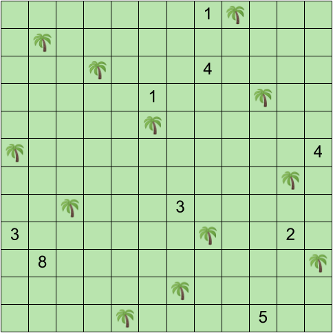
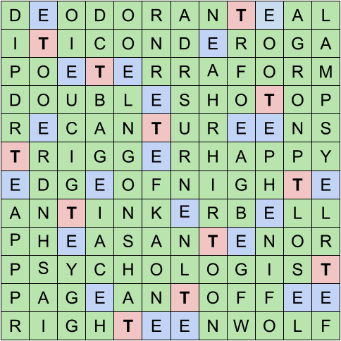

The locations of the trees can be deduced by following the rules of the logic puzzle.

Some tips on how to get started on the logic puzzle:
The cryptic clues all solve to words that either start or end with a T.
| Clue | Answer | Cryptic Explanation |
|---|---|---|
| A bug cannot even (3) | ANT | Even letters of "CANNOT" |
| Bang bang espresso (6 4) | DOUBLE SHOT | Double definition |
| Belligerent Pooh's striped friend finds rock on cloud nine (7-5) | TRIGGER-HAPPY | TIGGER + R(ock) + HAPPY |
| Breathe taking in gas, as bird (8) | PHEASANT | PANT taking in HE(lium), AS |
| Deny absurd centaur without you (6) | RECANT | Anagrammed CENTAUR - U |
| Dreadful flick to the head for insolent talk (2) | IT | "insolent talk" first letters for IT (the movie) |
| Ending trip to salvage lost Pound (4) | POET | Last letters of "trip to salvage lost" |
| Farmer mixes in rot to landscape (9) | TERRAFORM | Anagram of Farmer + rot |
| Fiddle with famous violinist Peter's pal (6 4) | TINKER BELL | "Fiddle with" = TINKER + (Joshua) BELL |
| Fort icon with red back swathed in Roman cloth (11) | TICONDEROGA | ICON + DER (red backwards) inside TOGA |
| Hojicha without a hand in Tokyo (2) | TE | TEA - A = TE (hand in Japanese) |
| LOL! item: endless wedged sofa knights (4 2 5) | EDGE OF NIGHT | (w)EDGE(d) (s)OF(a) (k)NIGHT(s) |
| Proper ceremony broadcasted (5) | RIGHT | Homophone for RITE (ceremony) |
| Range amidst forgotten origins (5) | TENOR | Inside forgotTEN ORigins |
| Secret animated explorer trapped in dent with oxygen (9) | DEODORANT | DORA (animated explorer) and O (oxygen) inside DENT |
| Shade of headless steel, reportedly (4) | TEAL | TEEL (steel - s) homophone |
| Show where the veins oddly flow back (4 4) | TEEN WOLF | TEEN (odd letters of "the veins") + WOLF (flow backwards) |
| Shrink Skinner (12) | PSYCHOLOGIST | Double definition |
| Stock holder brought back to cover (3) | TOP | POT (stock holder) backwards |
| Time of payment for confectionery (6) | TOFFEE | T(ime) + OF + FEE (payment) |
| Underage people around city are soup servers (7) | TUREENS | UR (city) inside TEENS (underage people) |
| Webpage antivirus contains spectacle (7) | PAGEANT | Inside webPAGE ANTivirus |

Crucially, all “E”s in this grid are either adjacent or diagonally-adjacent to “T”s. The flavortext “flagged the earth around each tree” also hints at the extraction, which consists of identifying the relative locations of “E”s relative to each “T”, and using semaphore decoding to spell out the answer (reading the “T”s left-to-right): EVERYDAY MAMA.
At the time this puzzle was written, our hunt sorely lacked cryptics and grid logic puzzles, so I was tasked with writing a puzzle involving both of them. While I love logic puzzles, I am very bad at cryptics -- just doing them, never mind writing them! Huge thanks to Alison, Benji, and Dan for helping me with this portion.
The initial shell consisted of just the grid puzzle, the 22 answers (with the assumption that they will eventually be cryptics), the same grid-fill mechanic, and a diagonal extraction. Upon presenting this to some co-writers, a comment was made that the diagonal extraction only makes use of half the answers and is a rather predictable extraction mechanic. We eventually settled on the semaphore extraction which at least requires most of the grid-fill before being solved. Difficulty-wise we landed in a pretty good spot -- statistically one of the easier puzzles in R2, but definitely not too easy.
One piece of test-solver feedback we got was that the semaphore extraction is kind of hard to notice without fairly explicit flavortext pointing you to do so (where we eventually landed). As a puzzler who highly values thematic tightness/conciseness, this is one thing I do regret. I considered making the location of the initial numbers spell out SEMAPHORETE or something equivalent, but this ended up being too difficult and would have required re-writing almost all of the cryptic clues.